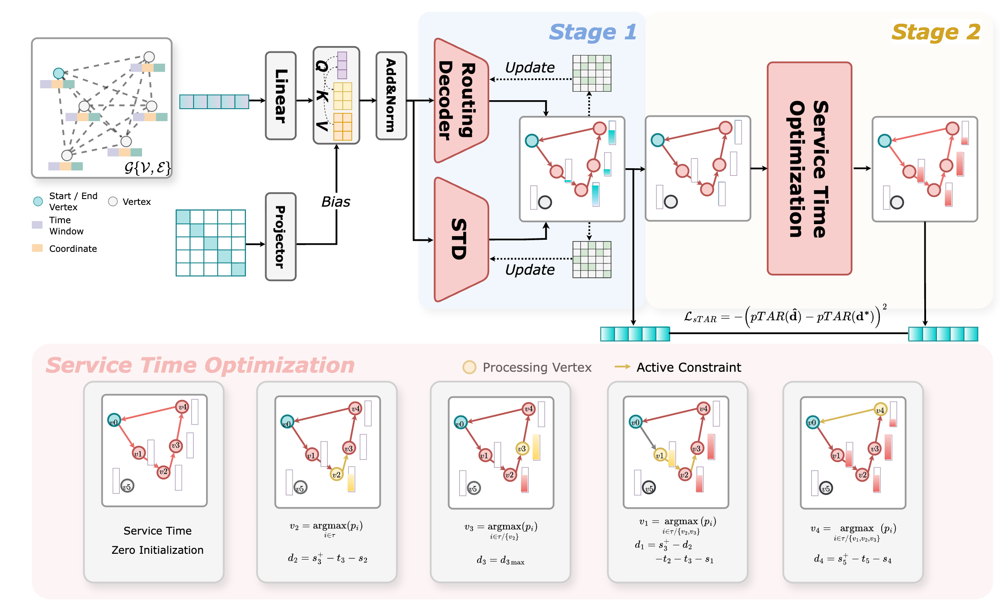
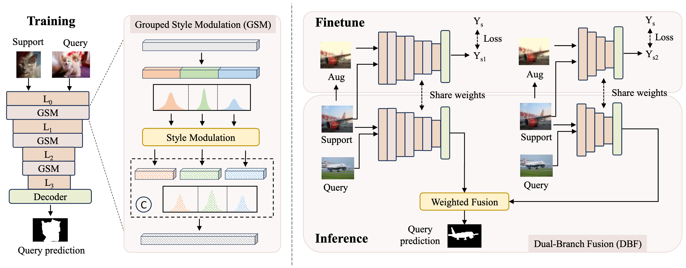

Zanxi Ruan
阮瓒茜
Hi, I am Zanxi! I'm a 2nd year PhD Candidate at University of Verona 🇮🇹
I am incredibly lucky to be supervised by
Prof. Marco Cristani
and
Dr. Yiming Wang.
My research hearts 🤍 lie in multimodal learning and information imbalance in large model training.
Previously, I earned my M.Sc. from NUDT and B.Sc. (Ranked 1st/70) from NCUT.
News
- Feb 21, 2026 🎉 Thrilled to share that our latest work StruXLIP: Enhancing Vision-Language Models with Multimodal Structural Cues has been accepted to CVPR 2026! Huge thanks to my shero and hero Yiming and Marco.
- Feb, 2026 🎉 Paper accepted at ICLR 2026: "Learning to Solve Orienteering Problem with Time Windows and Variable Profits,” International Conference on Learning Representations". Congratulations to Songqun!
- Jun, 2025 🎉 Paper accepted at ICCV 2025: "LOTS of Fashion! Multi-conditioning for Image Generation via Sketch-Text Pairing". Congratulations to Federico!
- Jun, 2025 🎉 My final master's research "Few-shot event-based action recognition" has been accepted by Neural Networks! This work marks a nice conclusion to my M.Sc. journey.
Selected Publications



